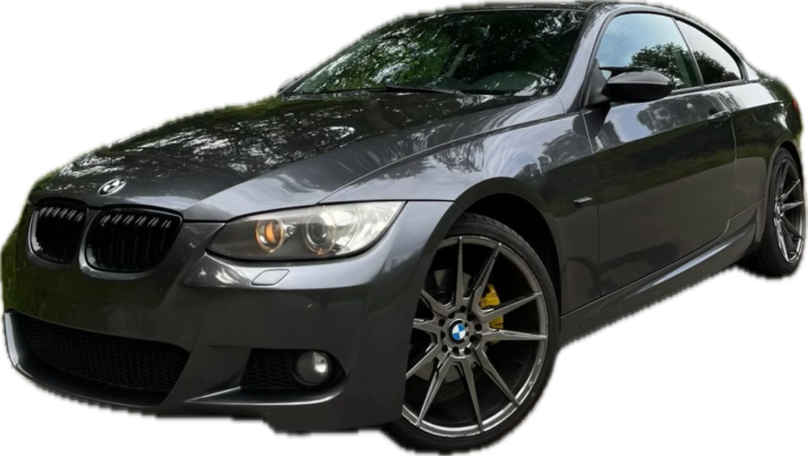
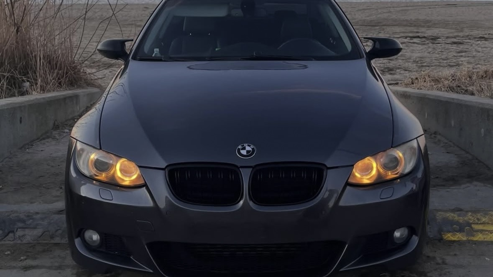
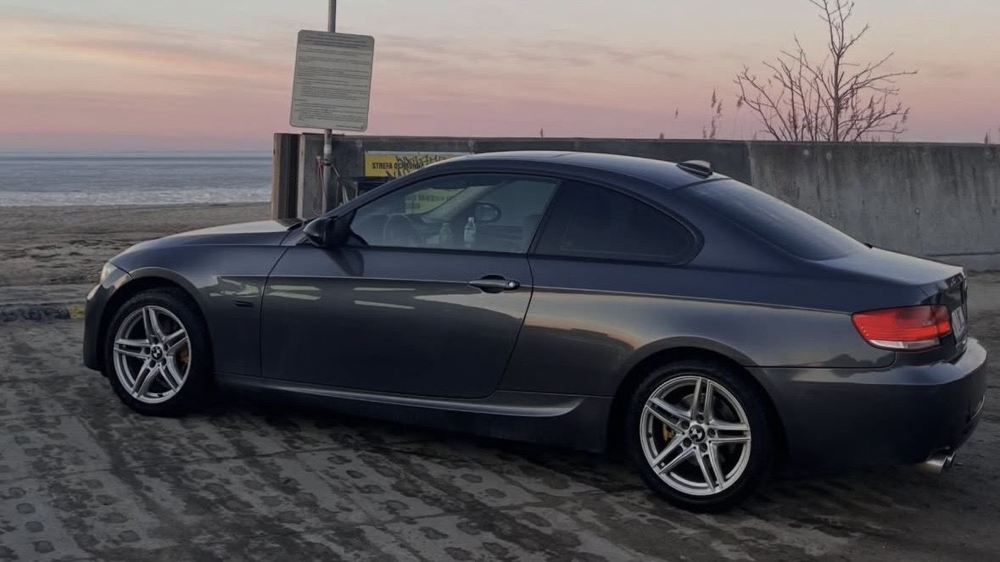
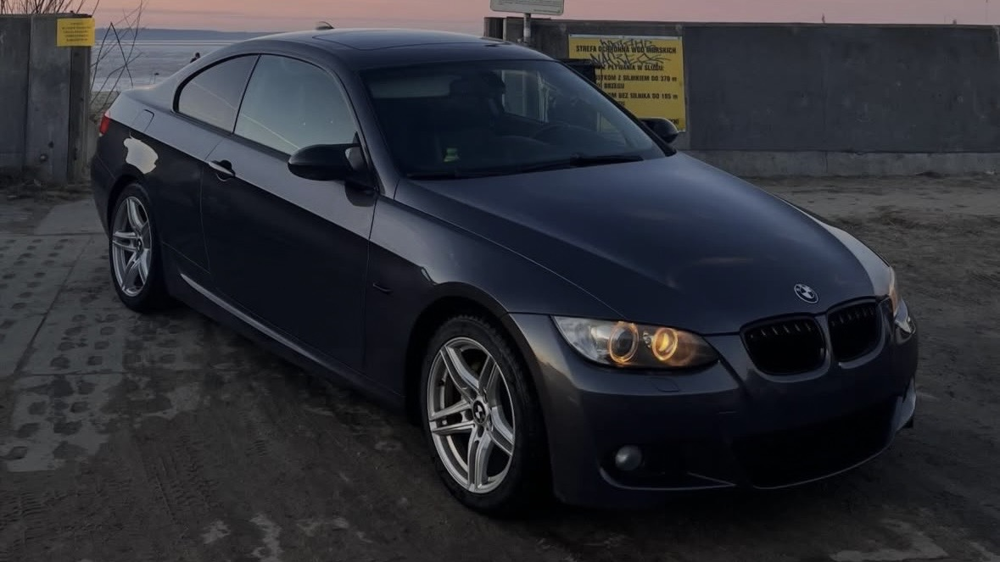

BMW E92 to kultowe coupe produkowane w latach 2006–2013. Cenione jest za ponadczasową linię nadwozia z bezramkowymi szybami, świetne właściwości jezdne i szeroką gamę silnikową. Na rynku wtórnym wyróżniają się wolnossące jednostki R6 (np. 330i) oraz wersje z doładowaniem (335i), a na szczycie gamy stoi legendarne M3 V8.

BMW E92 w standardowych wersjach gwarantuje rasowe, sportowe prowadzenie dzięki sztywniejszemu niż w sedanie zawieszeniu oraz genialnym silnikom rzędowym, które w wersjach 330i czy 335i zapewniają świetną dynamikę.
Podwozie i manualne skrzynie biegów są wyjątkowo trwałe, jednak kapryśne wtryskiwacze w benzyniakach High Precision Injection oraz awaryjne podajniki pasów bezpieczeństwa wymagają regularnej i kosztownej uwagi.
Sylwetka klasycznego coupe z bezramkowymi drzwiami, dłuższą maską i muskularnym tyłem wyróżnia się unikalnymi panelami nadwozia, które nie pasują z żadnej innej wersji tej generacji.


